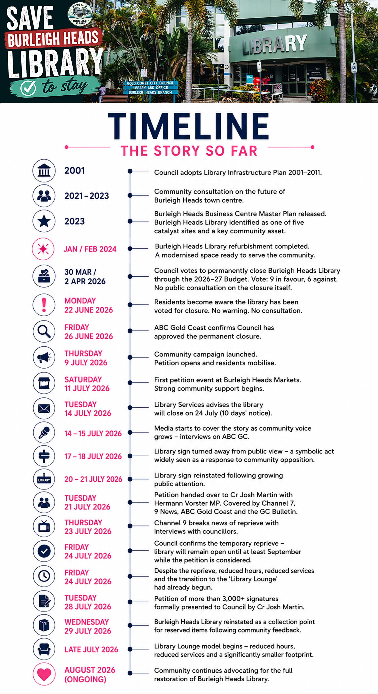
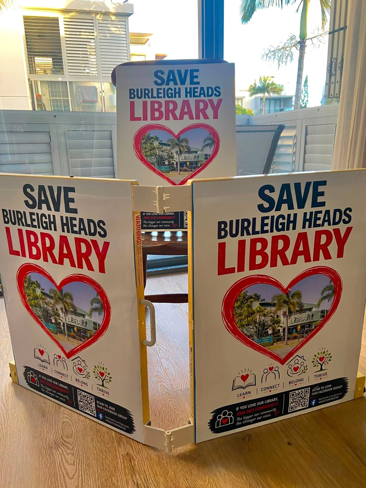
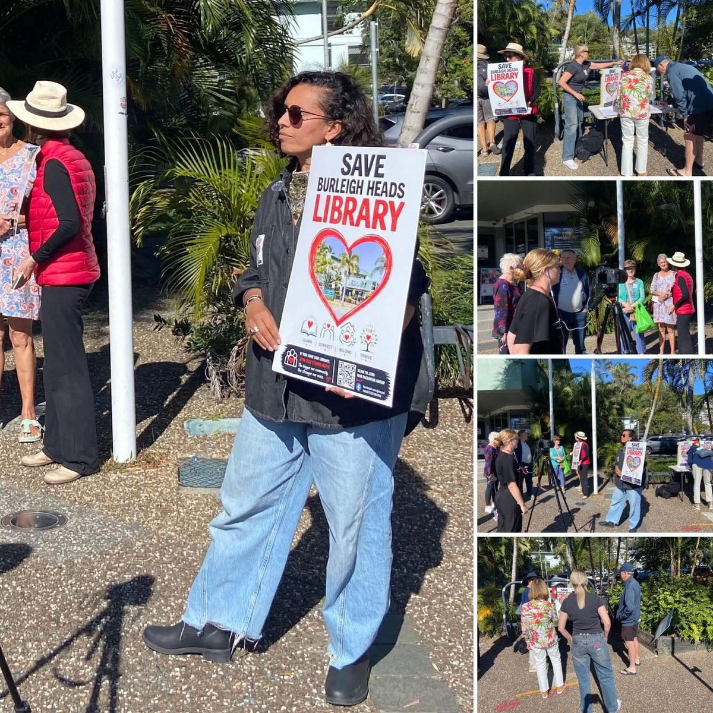
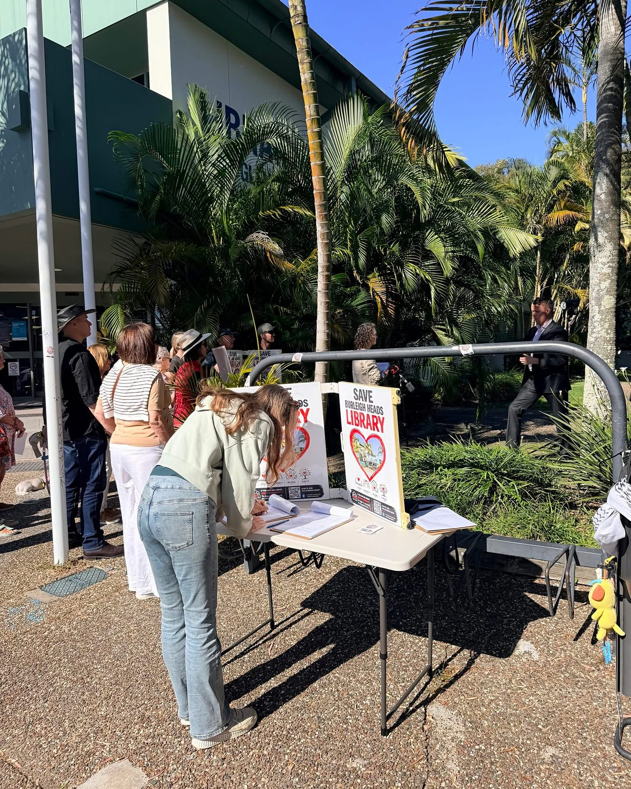

Community campaign — Burleigh Heads, QLD
One community asset shouldn't have to disappear for another to exist.
Gold Coast City Council planned to permanently close Burleigh Heads Library and turn the building into a temporary arts and creative hub — a decision made without community consultation. Locals said no — and we're not done yet.
Where things stand
The library was saved for now — not for good
Council votes to close the library
Gold Coast City Council voted 9–6, in a closed budget session with no public consultation, to close Burleigh Heads Library and repurpose the building as a temporary arts and creative hub.
A temporary reprieve, after a 3,000+ signature petition
Facing a petition tabled by Cr Josh Martin, council confirmed the branch — due to close that day — would stay open until the Burleigh Waters refurbishment finishes, and opened a review of the decision. Reduced hours, space, books and the shift to a "Library Lounge" model had already begun.
The fight for a permanent library isn't over
A delay and a review are not a reversal. Council has still not released the evidence behind the original decision despite repeated requests. We're keeping the pressure on until that evidence is public and the closure is off the table for good.
The full timeline
The story so far, in detail

In their words
Why this matters to Burleigh Heads
“Burleigh Heads deserves both library and arts services. One community asset should not have to disappear for another to exist.” Linda Daley, Save Burleigh Heads Library campaign coordinator
The campaign in action
Locals showing up, again and again



This decision can still be reversed.
See what's happening this week and where your help is needed most.